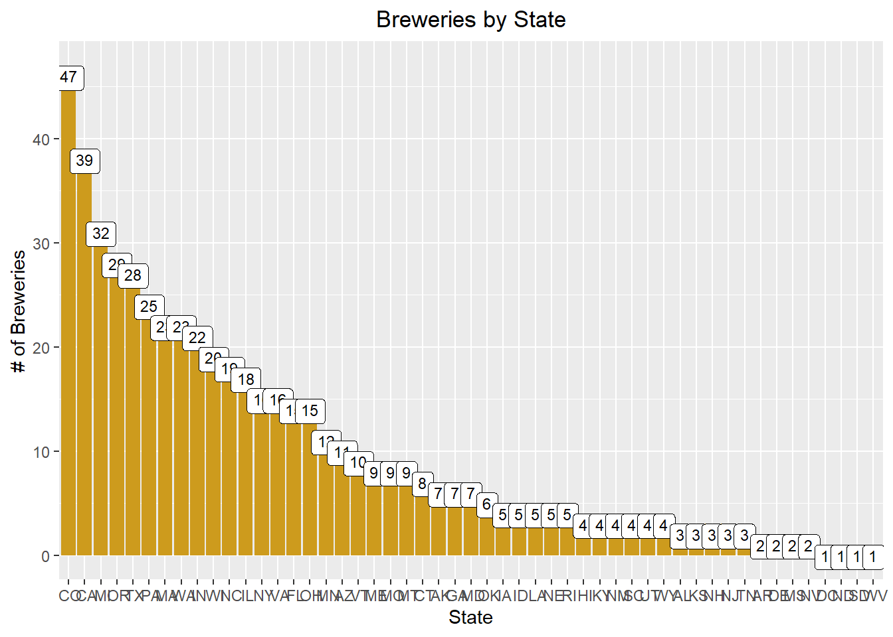
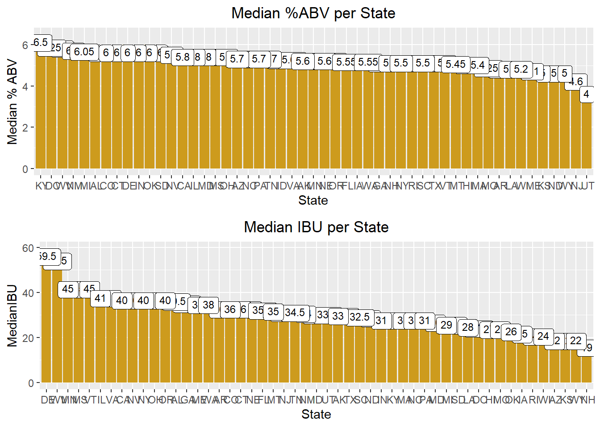
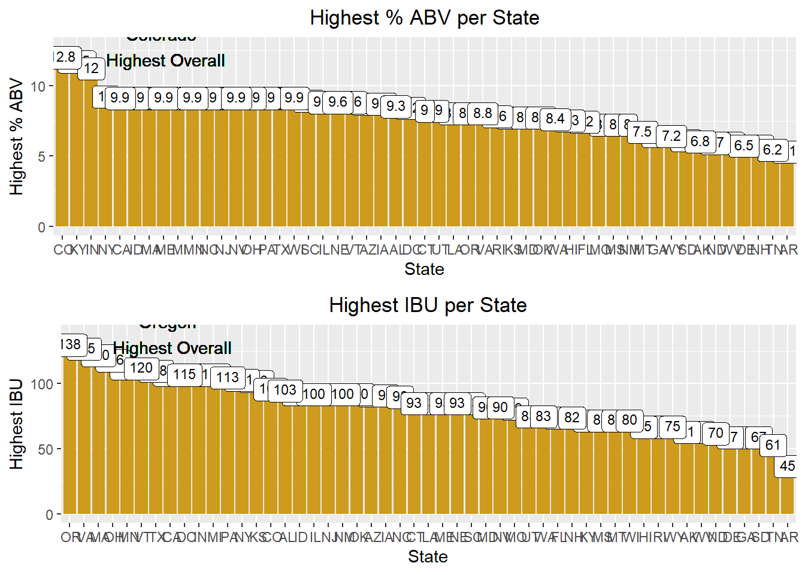
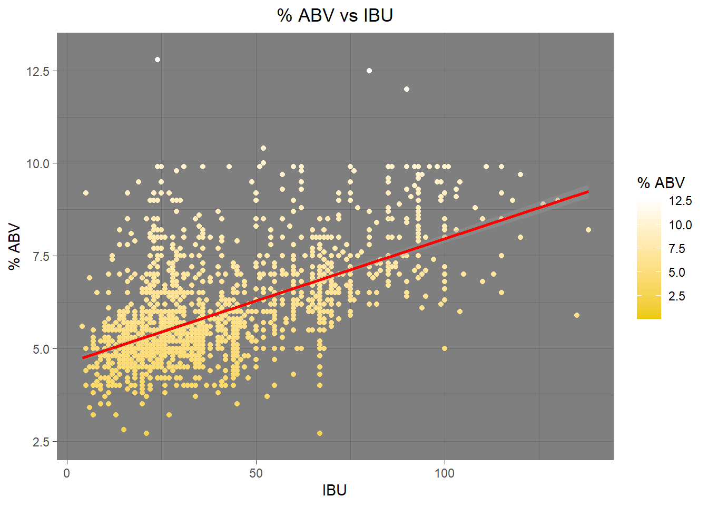
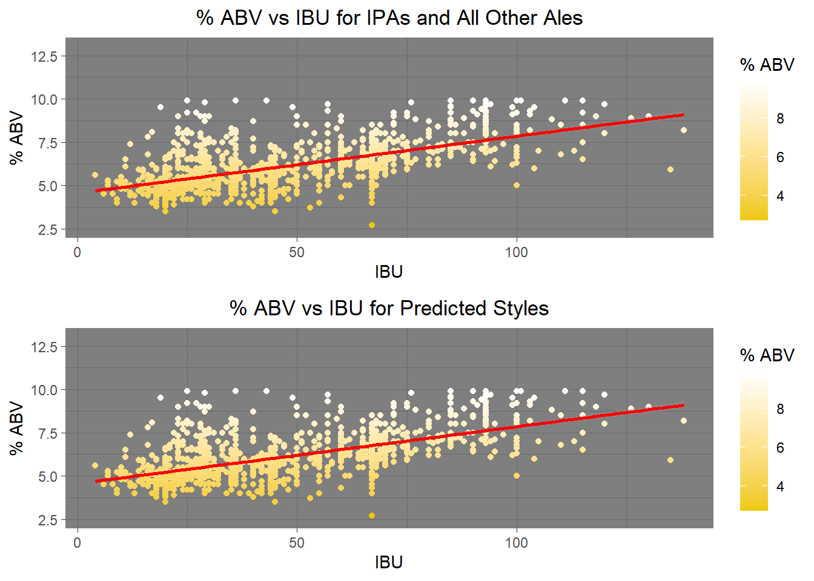
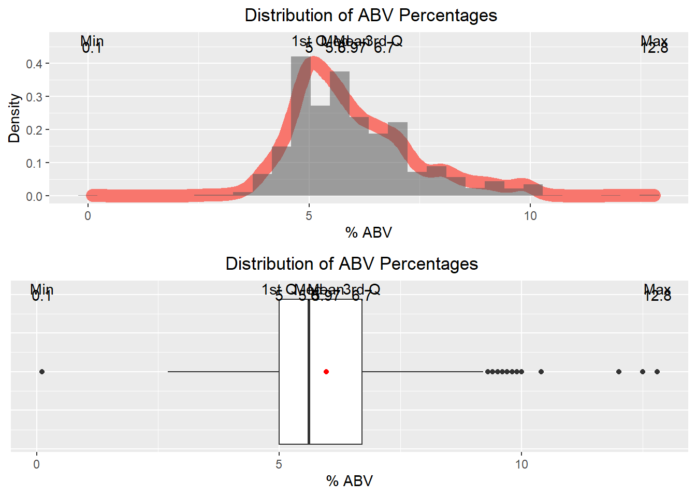

Download the wrangled dataset for the app below
# Load the libraries in R
library(XML) #xml_Parse
library(dplyr)
library(tidyr)
library(stringr)
library(rvest) #html_table, html_node
library(ggplot2)
library(RCurl) #getURL
library(tidyverse)
library(BSDA)
library(GGally)
library(openintro)
library(viridis)
library(mapproj)
library(ggpubr)
library(FSA)
library(rmarkdown)# Load the dataset from the file system
beers<- read.csv("Beers.csv",na.strings=c("","NA"))
brews<- read.csv("Breweries.csv",na.strings=c("","NA"))We can see that Colorado, California, Michigan, Oregon and Texas have the highest number of breweries.
West Virginia & DC only have one brewery each
#Q1 breweries per state
#Group the data by state
brewbystate<- data.frame(brews %>% group_by(State) %>% tally() %>% arrange(desc(n)))
#Print the data to show the brewery count per state
print(brewbystate)## State n
## 1 CO 47
## 2 CA 39
## 3 MI 32
## 4 OR 29
## 5 TX 28
## 6 PA 25
## 7 MA 23
## 8 WA 23
## 9 IN 22
## 10 WI 20
## 11 NC 19
## 12 IL 18
## 13 NY 16
## 14 VA 16
## 15 FL 15
## 16 OH 15
## 17 MN 12
## 18 AZ 11
## 19 VT 10
## 20 ME 9
## 21 MO 9
## 22 MT 9
## 23 CT 8
## 24 AK 7
## 25 GA 7
## 26 MD 7
## 27 OK 6
## 28 IA 5
## 29 ID 5
## 30 LA 5
## 31 NE 5
## 32 RI 5
## 33 HI 4
## 34 KY 4
## 35 NM 4
## 36 SC 4
## 37 UT 4
## 38 WY 4
## 39 AL 3
## 40 KS 3
## 41 NH 3
## 42 NJ 3
## 43 TN 3
## 44 AR 2
## 45 DE 2
## 46 MS 2
## 47 NV 2
## 48 DC 1
## 49 ND 1
## 50 SD 1
## 51 WV 1#Plot the data using GGPlot
brewbystate %>% ggplot(aes(x = reorder(as.factor(State),-n), y = n)) +
labs(y="# of Breweries", x = "State") +
geom_bar(stat = "identity", position = "dodge", fill = "goldenrod3") +
geom_label(size = 3, label = brewbystate$n, vjust = 1) +
ggtitle('Breweries by State') + theme(plot.title = element_text(hjust = .5))
#Q2 merge the data sets and print first/last 6 rows.
#rename brewery id column to match "beers" respective column.
names(brews)[1] <- "Brewery_id"
#rename columns from each df since they are names for different things.
names(beers)[1]<- "Beer"
names(brews)[2]<- "Brewery"
#merge both the datasets
brewerydata<- merge(beers,brews, by = "Brewery_id", all = TRUE)
brewerydata$State<-as.factor(brewerydata$State)
brewerydata$City<-as.factor(brewerydata$City)
brewerydata$Brewery_id<-as.factor(brewerydata$Brewery_id)
brewerydata$ABV<-brewerydata$ABV * 100
brewerydata<-brewerydata %>% rename("% ABV" = ABV)
#Print the first and the last 6 records in the dataset
head(brewerydata, 6)## Brewery_id Beer Beer_ID % ABV IBU
## 1 1 Get Together 2692 4.5 50
## 2 1 Maggie's Leap 2691 4.9 26
## 3 1 Wall's End 2690 4.8 19
## 4 1 Pumpion 2689 6.0 38
## 5 1 Stronghold 2688 6.0 25
## 6 1 Parapet ESB 2687 5.6 47
## Style Ounces Brewery City
## 1 American IPA 16 NorthGate Brewing Minneapolis
## 2 Milk / Sweet Stout 16 NorthGate Brewing Minneapolis
## 3 English Brown Ale 16 NorthGate Brewing Minneapolis
## 4 Pumpkin Ale 16 NorthGate Brewing Minneapolis
## 5 American Porter 16 NorthGate Brewing Minneapolis
## 6 Extra Special / Strong Bitter (ESB) 16 NorthGate Brewing Minneapolis
## State
## 1 MN
## 2 MN
## 3 MN
## 4 MN
## 5 MN
## 6 MNtail(brewerydata, 6)## Brewery_id Beer Beer_ID % ABV IBU
## 2405 556 Pilsner Ukiah 98 5.5 NA
## 2406 557 Heinnieweisse Weissebier 52 4.9 NA
## 2407 557 Snapperhead IPA 51 6.8 NA
## 2408 557 Moo Thunder Stout 50 4.9 NA
## 2409 557 Porkslap Pale Ale 49 4.3 NA
## 2410 558 Urban Wilderness Pale Ale 30 4.9 NA
## Style Ounces Brewery City
## 2405 German Pilsener 12 Ukiah Brewing Company Ukiah
## 2406 Hefeweizen 12 Butternuts Beer and Ale Garrattsville
## 2407 American IPA 12 Butternuts Beer and Ale Garrattsville
## 2408 Milk / Sweet Stout 12 Butternuts Beer and Ale Garrattsville
## 2409 American Pale Ale (APA) 12 Butternuts Beer and Ale Garrattsville
## 2410 English Pale Ale 12 Sleeping Lady Brewing Company Anchorage
## State
## 2405 CA
## 2406 NY
## 2407 NY
## 2408 NY
## 2409 NY
## 2410 AKABV had 62 missing values
IBU had 1005 missing values
Style of beer had 5 missing values
Our initial approach was to scrape the web to find the missing values for ABV & IBU. However we encountered quite a few challenges in extracting the data from the internet due to inconsistencies in HTML formatting across different websites. Our final approach was to calculate the median values of ABV and IBU per style and impute them into the respective missing values.
#Q3 Address the missing values
#how many na rows in ABV and IBU? What about missing Styles?
length(which(is.na(brewerydata$`% ABV`))) #62 NAs## [1] 62length(which(is.na(brewerydata$IBU))) #1005 NAs## [1] 1005length(which(is.na(brewerydata$Style))) #5 NAs## [1] 5#examined the five rows with View(brewerydata), and found that "CROWLER" is not a beer. It's just a container. "Can'd AID foundation" is also not a beer. It's a foundation. Special release just refers to a series of beers. add styles to Oktoberfest and kilt lifter.
#deleting crowler and can'd aid
brewerydata<-brewerydata[-c(227,992, 993),]
#adding style from https://untappd.com/b/freetail-brewing-co-oktoberfiesta/79567
brewerydata$Style[454] <- "Märzen"
#adding style from https://untappd.com/b/four-peaks-brewing-company-kilt-lifter/4055
brewerydata$Style[945] <- "Scottish Export Ale"
#find means per style of ABV and IBU, disregarding NA rows
abvmean <- brewerydata %>% group_by(Style, na.rm = TRUE) %>% mutate(`Mean%ABV` = round(mean(`% ABV`, na.rm=TRUE), digits = 1))
ibumean <- brewerydata %>% group_by(Style) %>% mutate(MeanIBU = as.integer(mean(IBU, na.rm = TRUE)))
#replace NA rows with means for their respective styles taken from above.
brewerydata$`% ABV`[is.na(brewerydata$`% ABV`)] <- abvmean$`Mean%ABV`[is.na(brewerydata$`% ABV`)]
brewerydata$IBU[is.na(brewerydata$IBU)] <- ibumean$MeanIBU[is.na(brewerydata$IBU)]
#52 empty IBU values remain. After looking at each one, there are three that have IBU values according to untappd.com. the rest do not have IBU because of their style.
#add IBU from https://untappd.com/b/thunderhead-brewing-golden-frau/38392
brewerydata$IBU[1476] <- 12
#add IBU from https://untappd.com/b/hawai-i-nui-brewing-southern-cross-belgian-double-red-ale/29698
brewerydata$IBU[1199] <- 59
#add IBU from https://untappd.com/b/figueroa-mountain-brewing-co-weiss-weiss-baby/1043342
brewerydata$IBU[273] <- 40DC in top 5 median ABV, WV in top 5 ABV & IBU. Untapped markets for lower alcohol beers.
#Q4 Medians of ABV and IBU
#find median of non-NA IBUs by state
brewerydata<- brewerydata %>%
group_by(State) %>%
mutate(MedianIBU = median(IBU, na.rm = TRUE))
#find median of non-NA ABVs by state
brewerydata<- brewerydata %>%
group_by(State) %>%
mutate(MedianABV = median(`% ABV`, na.rm = TRUE))
## Make adjustments to the scale of the text
####plot results####
#plot the median ABVs for each state, with labels
medabvplot<- brewerydata %>% ggplot(aes(x = reorder(State,-MedianABV), y = MedianABV)) +
ylab("Median % ABV") +
xlab('State') +
geom_bar(stat = "identity", position = "dodge", fill = "goldenrod3") +
geom_label(size = 3, label = brewerydata$MedianABV, vjust = 1) +
theme(plot.title = element_text(hjust = .5)) +
labs(title = "Median %ABV per State")
#plot the median IBUs for each state, with labels
medibuplot<- brewerydata %>% ggplot(aes(x = reorder(State,-MedianIBU), y = MedianIBU), ylab = "Median IBU") +
geom_bar(stat = "identity", position = "dodge", fill = "goldenrod3") +
geom_label(size = 3, label = brewerydata$MedianIBU, vjust = 1)+
theme(plot.title = element_text(hjust = .5))+
labs(title = "Median IBU per State") +
xlab('State')
#plots both charts together in a stacked configuration
ggarrange(medabvplot, medibuplot, ncol = 1, nrow = 2)
Colorado is the state with highest ABV
Oregon is the state with highest IBU
Highest ABV = 12.8 %
Highest IBU = 138
Colorado Highest ABV, and higher-end IBU at 103.
#Q5
#Look up and store max values per state, making sure to ignore NA values
maxabvperstate<-brewerydata %>%
group_by(State) %>%
filter(`% ABV`==max(`% ABV`, na.rm = TRUE))
maxibuperstate<-brewerydata %>%
group_by(State) %>%
filter(IBU==max(IBU, na.rm = TRUE))
#discover which state has the highest for each
maxabvstate<-brewerydata$State[which.max(brewerydata$`% ABV`)] #Colorado (CO)
maxibustate<-brewerydata$State[which.max(brewerydata$IBU)] #Oregon (OR)
#plot max ABVs per state, label them, and call out the highest one
maxabvplot<- maxabvperstate %>% ggplot(aes(x = reorder(State,-maxabvperstate$'% ABV'), y = `% ABV`)) +
ylab("Highest % ABV") +
geom_bar(stat = "identity", position = "dodge", fill = "goldenrod3") +
geom_label(size = 3, label = maxabvperstate$`% ABV`, vjust = 1) +
theme(plot.title = element_text(hjust = .5)) +
labs(title = "Highest % ABV per State") +
xlab('State') +
geom_text(aes(8, 12.8, label="Colorado \n Highest Overall"))
#plot max IBUs per state, label them, and call out the highest one
maxibuplot<- maxibuperstate %>% ggplot(aes(x = reorder(State,-IBU), y = IBU)) +
ylab("Highest IBU") +
geom_bar(stat = "identity", position = "dodge", fill = "goldenrod3") +
geom_label(size = 3, label = maxibuperstate$IBU, vjust = 1) +
theme(plot.title = element_text(hjust = .5)) +
labs(title = "Highest IBU per State") +
xlab('State') +
geom_text(aes(8, 138, label="Oregon \n Highest Overall"))
#plots both charts together in a stacked configuration
ggarrange(maxabvplot, maxibuplot, ncol = 1, nrow = 2)
The relationship seems to indicate that generally, breweries are making higher % ABV beers with higher IBU. However, their is no dependency between the two variables since they are obtained through different means. ABV is determined by yeast amount and time to ferment, while IBU is a result of hops added.
#Q7 associate IBU and ABV on scatterplot
brewerydata %>% ggplot(aes(x= IBU, y = `% ABV`, color = `% ABV`)) +
geom_point() +
ylim(2.5, 13) +
theme_dark() +
stat_smooth(method = "lm", color = "red") +
labs(title = "% ABV vs IBU") +
theme(plot.title = element_text(hjust = .5)) +
scale_color_gradient(low = "gold2", high = "white")## Warning: Removed 49 rows containing non-finite values (stat_smooth).## Warning: Removed 49 rows containing missing values (geom_point).
High KNN accuracy for classifying whether a beer is Ale or IPA
#Q8 IBU/ABV for IPA vs any other Ales.
#subset the data to only Styles containing "Ale" and "IPA"
Ale_Data<- brewerydata[grepl("Ale|IPA", brewerydata$Style),]
#modify so we only have 2 levels for the KNN: "IPA" and "Other Ales"
BinaryTest<- Ale_Data
BinaryTest$Style<-ifelse(grepl("IPA", Ale_Data$Style), "IPA", "Other Ales")
BinaryTest$Style<- as.factor(BinaryTest$Style)
BinaryTest<-BinaryTest[, 4:6]
#KNN setup
library(class) #for the knn function
library(caret) #for the confusion matrix function
n.points<-nrow(BinaryTest)
normed1<- (BinaryTest[,1] - min(BinaryTest[,1]))/max(range(BinaryTest[,1]))
normed2<- (BinaryTest[,2] - min(BinaryTest[,2]))/max(range(BinaryTest[,2]))
normed<- data.frame(normed1, normed2)
set.seed(6)
beerloop<-data.frame()
for (k in 1:200) {
predicted.labels <- knn.cv(normed, BinaryTest$Style, k) #predict values
#how many were right, based on our known values saved above.
num.correct.labels <- sum(predicted.labels == BinaryTest$Style)
#correct div by total = accuracy.
accuracy <- num.correct.labels / n.points
CM<-confusionMatrix(table(BinaryTest$Style,predicted.labels))
accuracy <- CM$overall[1]
#add row to dataframe containing the values from each loop
beerloop <- rbind(beerloop, data.frame(k, accuracy))
}
#what k has the highest accuracy? answer is 21 with .8964169
which(beerloop$accuracy == max(beerloop$accuracy))## [1] 21Predictions<-knn.cv(normed, BinaryTest$Style, k = 21)
confusionMatrix(table(BinaryTest$Style, Predictions))## Confusion Matrix and Statistics
##
## Predictions
## IPA Other Ales
## IPA 494 77
## Other Ales 82 882
##
## Accuracy : 0.8964
## 95% CI : (0.8801, 0.9112)
## No Information Rate : 0.6248
## P-Value [Acc > NIR] : <2e-16
##
## Kappa : 0.7787
##
## Mcnemar's Test P-Value : 0.7511
##
## Sensitivity : 0.8576
## Specificity : 0.9197
## Pos Pred Value : 0.8651
## Neg Pred Value : 0.9149
## Prevalence : 0.3752
## Detection Rate : 0.3218
## Detection Prevalence : 0.3720
## Balanced Accuracy : 0.8887
##
## 'Positive' Class : IPA
## # Code for plots
aleabvibuplot<-BinaryTest %>% ggplot(aes(x= IBU, y = `% ABV`, color = `% ABV`)) +
geom_point() +
ylim(2.5, 13) +
theme_dark() +
stat_smooth(method = "lm", color = "red") +
labs(title = "% ABV vs IBU for IPAs and All Other Ales") +
theme(plot.title = element_text(hjust = .5)) +
scale_color_gradient(low = "gold2", high = "white")
predicted_style <- knn.cv(BinaryTest[,1:2],BinaryTest$Style,k=21)
BinaryTestKnn <- data.frame(BinaryTest,predicted_style)
BinaryTestKnn <- BinaryTestKnn %>% rename("% ABV" = X..ABV)
BinaryTestKnn <- BinaryTestKnn %>% rename("Predicted Style" = predicted_style)
predaleabvibuplot<- BinaryTestKnn %>% ggplot(aes(x= IBU, y = `% ABV`, color = `% ABV`)) +
geom_point() +
ylim(2.5, 13) +
theme_dark() +
stat_smooth(method = "lm", color = "red") +
labs(title = "% ABV vs IBU for Predicted Styles") +
theme(plot.title = element_text(hjust = .5)) +
scale_color_gradient(low = "gold2", high = "white")
ggarrange(aleabvibuplot, predaleabvibuplot, ncol = 1, nrow = 2)
# Correlation. There is overwhelming evidence that ABV and IBU are linearly correlated (p-value = <.0001). The Coefficient of Determination is .596, which means that IBU explains about 60% of the variation of ABV.
cor.test(brewerydata$`% ABV`,brewerydata$IBU)##
## Pearson's product-moment correlation
##
## data: brewerydata$`% ABV` and brewerydata$IBU
## t = 36.021, df = 2356, p-value < 2.2e-16
## alternative hypothesis: true correlation is not equal to 0
## 95 percent confidence interval:
## 0.5692699 0.6213604
## sample estimates:
## cor
## 0.5959417
Comment on the summary statistics and distribution of the ABV variable.
As indicated in the histogram, density and the boxplot, we can observe that there is some amount of right skewness present in the ABV data
this could be due to the number of outliers present in the dataset. Also the summary stats is present in the output below.
